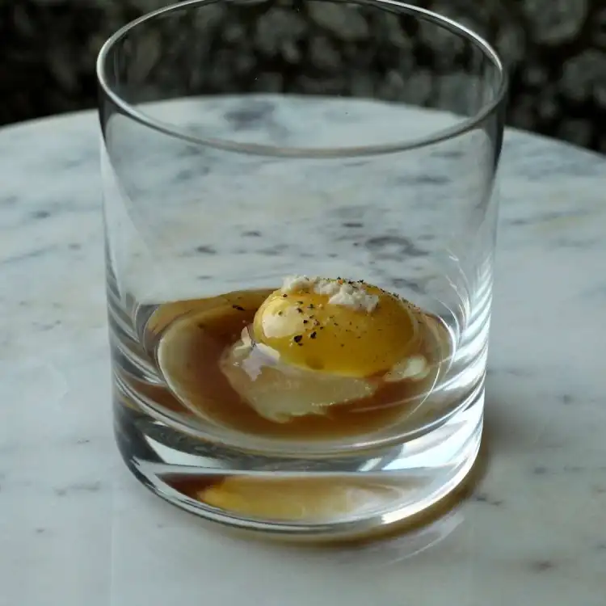

Prairie Oyster Cocktail

Ingredients
- 1 Egg Yolk
- 1 tsp Malt Vinegar
- 1 tsp Worcestershire sauce
- 1/2 tsp Horseradish
- 1 Dash Salt
- 1 Dash Black Pepper
Directions
- Pour liquor of your choice into the glass
- Crack and separate an egg yolk into a lowball glass.
- Add malt vinegar, worcestershire sauce, horseradish.
- Add a dash of salt and black pepper.
- Consume the prairie oyster in a single gulp.